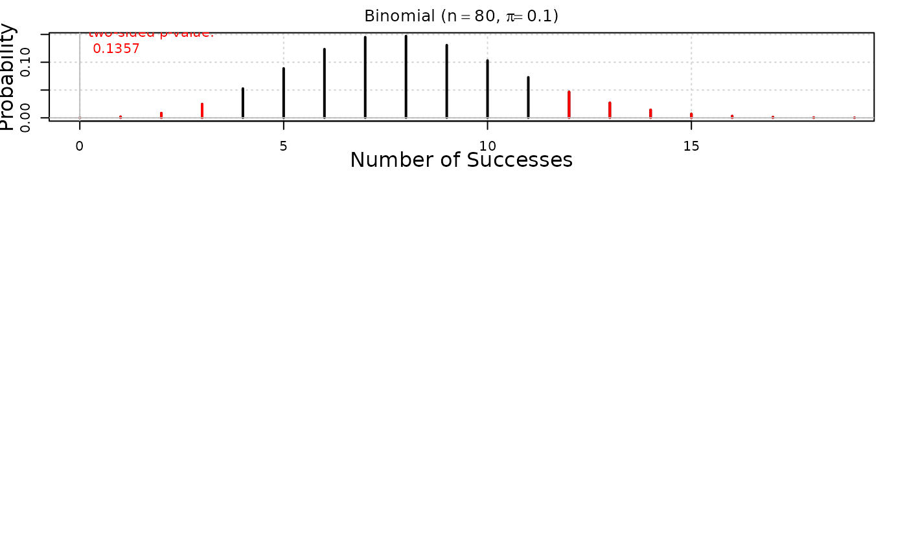

binomtest calculates performs an exact binomial test and graphs the
binomial distribution and/or binomial confidence interval.
Usage
iscambinomtest(
observed,
n,
hypothesized = NULL,
alternative,
conf.level = NULL,
verbose = TRUE
)Arguments
- observed
The observed number of successes or sample proportion (assumed to be proportion if value less than one.)
- n
number of trials.
- hypothesized
hypothesized probability of success.
- alternative
"less", "greater", or "two.sided"
- conf.level
Confidence level for a two-sided confidence interval.
- verbose
Logical, defaults to
TRUE. Set toFALSEto suppress messages
Value
a list of the p-value along with lower and upper bound for the calculated confidence interval.
Examples
iscambinomtest(
observed = 17,
n = 25,
hypothesized = 0.5,
alternative = "greater"
)
#>
#> Exact Binomial Test
#>
#> Data: observed successes = 17, sample size = 25, sample proportion = 0.68
#>
#> Null hypothesis : pi = 0.5
#> Alternative hypothesis: pi > 0.5
#> p-value: 0.053876
iscambinomtest(
observed = 12,
n = 80,
hypothesized = 0.10,
alternative = "two.sided",
conf.level = 0.95
)

#>
#> Exact Binomial Test
#>
#> Data: observed successes = 12, sample size = 80, sample proportion = 0.15
#>
#> Null hypothesis : pi = 0.1
#> Alternative hypothesis: pi <> 0.1
#> p-value: 0.13575
#> 95 % Confidence interval for pi: ( 0.079982 , 0.24736 )
iscambinomtest(
observed = 0.14,
n = 100,
hypothesized = 0.20,
alternative = "less"
)
#>
#> Exact Binomial Test
#>
#> Data: observed successes = 14, sample size = 100, sample proportion = 0.14
#>
#> Null hypothesis : pi = 0.2
#> Alternative hypothesis: pi < 0.2
#> p-value: 0.080444
iscambinomtest(observed = 17, n = 25, conf.level = 0.95)
#>
#> Exact Binomial Test
#>
#> Data: observed successes = 17, sample size = 25, sample proportion = 0.68
#>
#> 95 % Confidence interval for pi: ( 0.465 , 0.8505 )
iscambinomtest(observed = 12, n = 80, conf.level = c(0.90, 0.95, 0.99))
#>
#> Exact Binomial Test
#>
#> Data: observed successes = 12, sample size = 80, sample proportion = 0.15
#>
#> 90 % Confidence interval for pi: ( 0.088894 , 0.23168 )
#> 95 % Confidence interval for pi: ( 0.079982 , 0.24736 )
#> 99 % Confidence interval for pi: ( 0.06429 , 0.27922 )